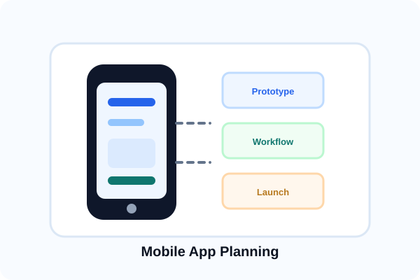

App Planning & Strategy
Clarifying your app idea before development begins.
Mobile apps require clear planning. We help you define purpose, target users, key features, workflows, technical requirements, timeline, and budget—so you have a clear vision before investing in development. A solid plan prevents costly surprises.
- App purpose and business goals definition
- Target user identification and analysis
- Key feature requirements and prioritization
- User workflow and interaction design
- Technical approach and platform selection
- Timeline and budget estimation
- Risk assessment and contingency planning
